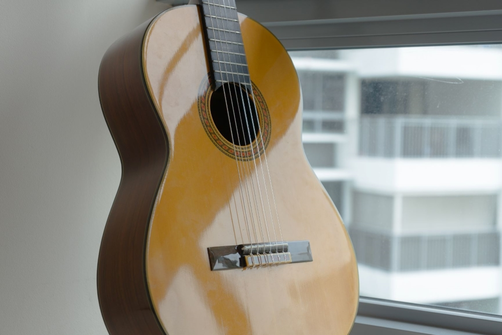
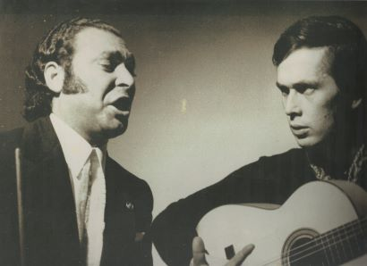

Spain | Cultural Heritage | Music
The Guitar in Flamenco Music
January 2020
The role of the Guitar in Flamenco Music.
Introduction
The most famous heritage of Andalusia must be Flamenco music. It has existed for over 300 years and has had a notable contribution to the music we hear in the present day. What is the role of the guitar in this musical tradition? Let us find out in this article.
Flamenco Guitars have small, uniquely shaped bodies and nylon strings. They 'should be' bought from old Spanish family businesses
Traditionally, flamenco music is not written down. For more than 300 years, it has been passed on through many generations of Spanish people. When most people think of Flamenco they think about guitars, but it truly encapsulated a large 'genre' of music that is musically expressed in various ways.
Forms of Flamenco Music
In general terms, Flamenco music is dramatic, deep and has an 'exotic', somewhat Middle-Eastern feel. It should be passionately expressed (from the face, body, hands, motivation and exclamations). But, Andalusians often distinguish three forms of practicing Flamenco: these are the toque (guitar), cante (vocal) and baile (dance).
The traditional role of the Flamenco guitar
So, while most people connotate Flamenco with guitar, it has a much wider array of renditions. In fact, if we speak of traditional Flamenco performance, the guitar tends to have a mere supportive role. In cante and baile, the guitarist is merely supposed to give non-interupting and mellow support to the lead performer. Yes, they might play a solo or two, but the traditional Flamenco guitar is not supposed to 'take over' a song.
The background role of the Flamenco guitar is visually expressed too: the guitarist does not take center stage in Baile and Cante performances. Moreover, they may sit in the corner of the stage or in a dim void of spotlights.
Paco de Lucía, among the first Spanish guitar virtuosos that introduced the world to Toque Flamenco music.
The modern role of the Flamenco guitar
In the late 20th century, Flamenco music spread across the globe. The Baile and Cante forms of Flamenco did not spread nearly as much as the popularity of Toque Flamenco music; guitarists all over the world learned from this age-old musical tradition - and used it in their styles. Some famous figures who are known for incorporating Flamenco music in their musical style are Eric Clapton and Willie Nelson.